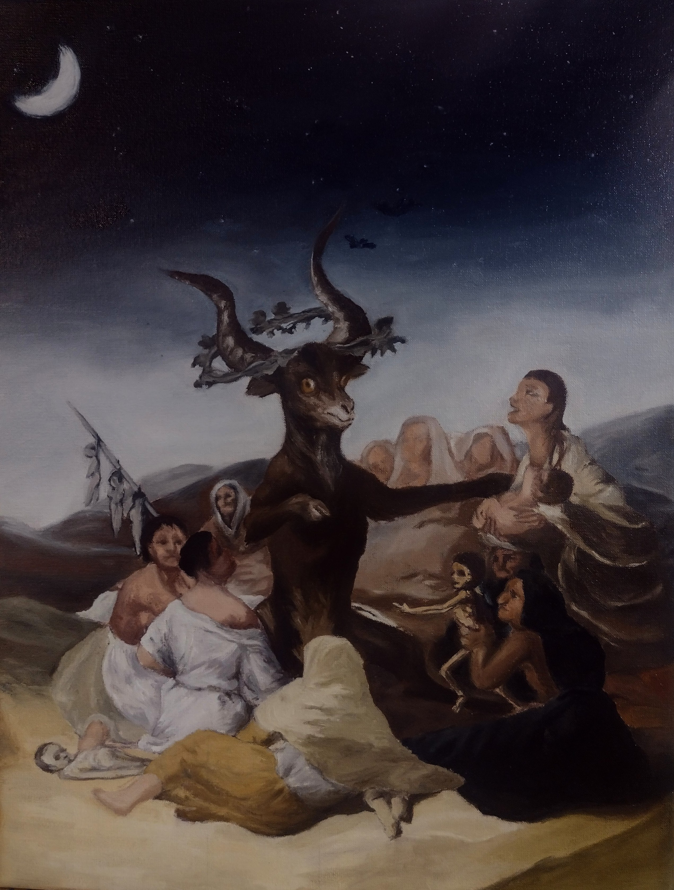

El aquelarre
Goya representa una fuerte inspiración en mi arte; los claroscuros, el dramatismo, la atmosfera y el misterio. Uno de mis artistas favoritos desde siempre,y fuerte referencia para mi aprendizaje desde que inicie en el mundo de la pintura al oleo. He aqui mi propia versión de una de sus más grandes obras.
